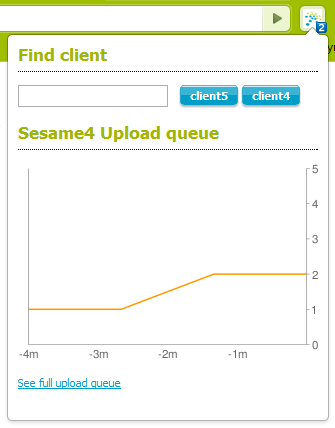
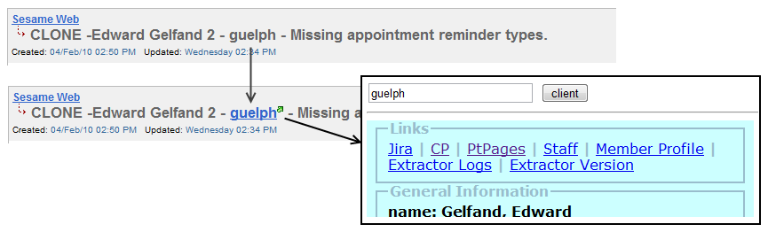

Installation
- Make sure you're running Google Chrome browser (sorry, no FireFox support this time).
- Install extension by link.
- Put ptistaff password into settings.
- Disable extension, then enable it (in extension menu).
- If everything is ok then you'll see number on the badge (like this ).
Features
- Show on badge and graph in popup window for following values:
- size of sesame4 upload queue
- size of sesame5 upload processing queue
- Fast Client Search shortcut in popup window.
- Add link to Fast Client Search on usernames in Jira issues (works only on title and description).
Bugs and Ideas
Send all bugs and ideas to ivan@sesamecommunications.com.
History
- 2010-02-16 - 1.0.1781
- Add Sesame5 upload processing queue size
- 2010-02-15 - 1.0.1776
Screenshots

